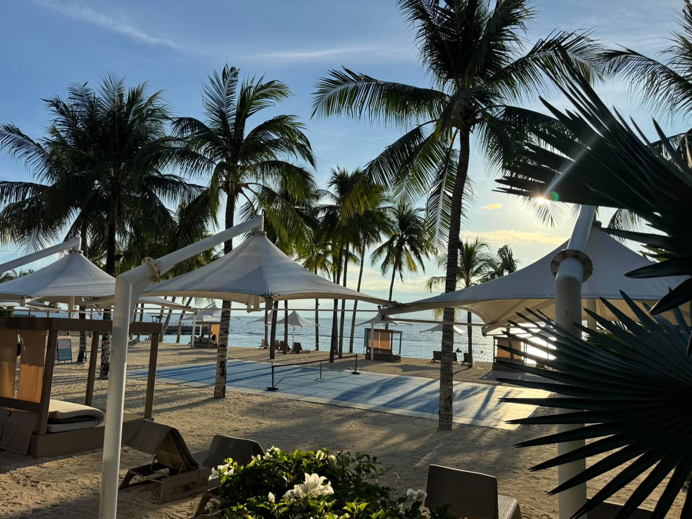

01Karagatan na Nakapaligid
Pagdating namin sa Samal, sinalubong agad kami ng malamig na simoy ng dagat at ng mga niyog na tila nag-aabang sa amin. Sa ilalim ng malalaking puting payong, sumilip ang araw sa pagitan ng mga dahon at pinagintab ang buhangin na parang ginto. Walang nagmamadali rito; ang tanging naririnig ay ang mahinang hampas ng alon at ang halakhak ng mga taong nakalimutan na muna ang kanilang mga alalahanin. Habang nakatanaw sa malawak na karagatan, naramdaman kong bumagal ang oras, at sa sandaling iyon, gusto ko na lang manatili at namnamin ang katahimikang matagal ko nang hinahanap.
Lamig ng SamalSariwang inumin, payapang dagat, at walang pagmamadali. Ganito pala ang pakiramdam ng bakasyon.